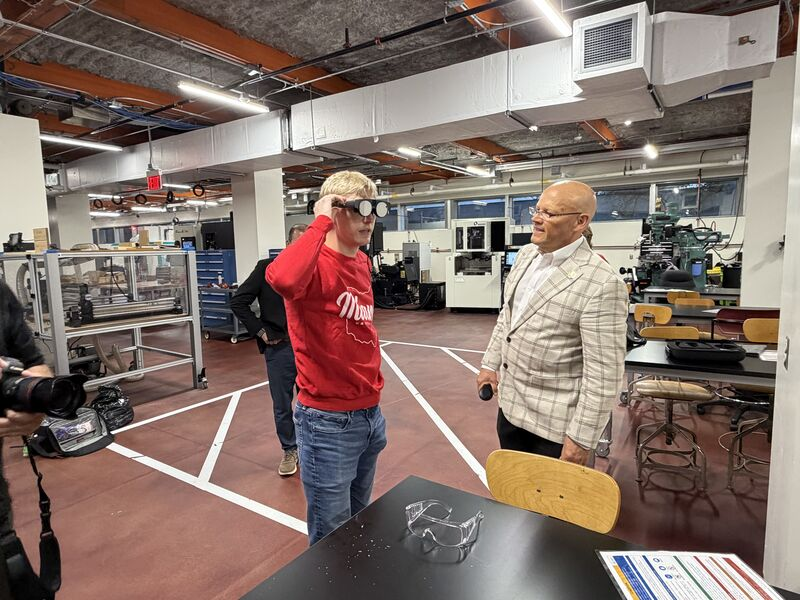
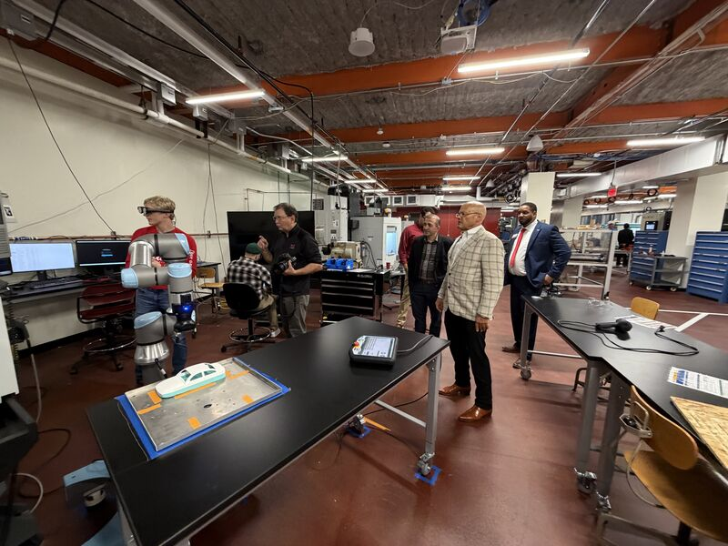
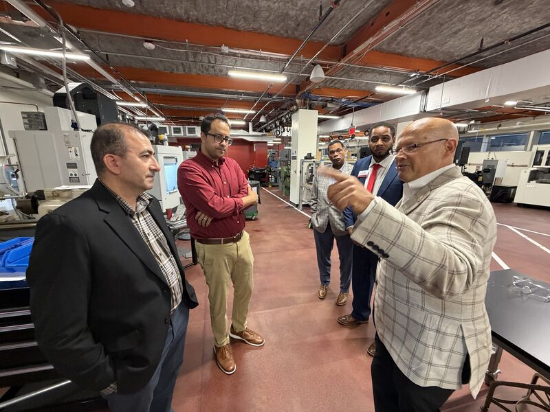
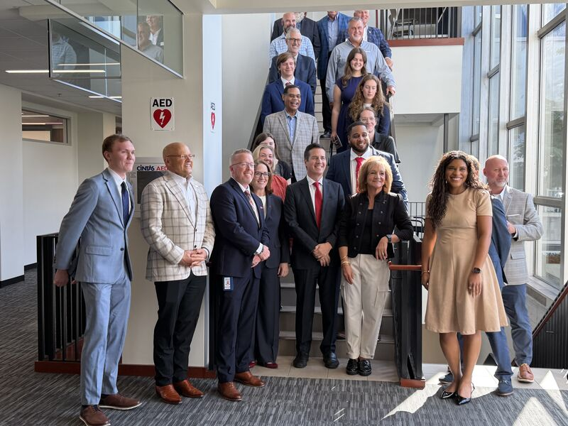
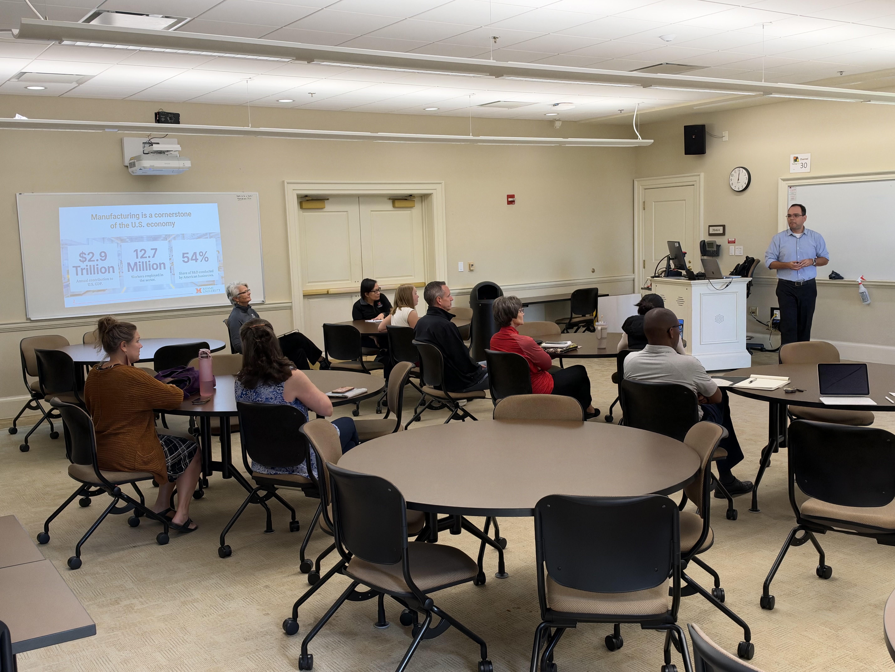
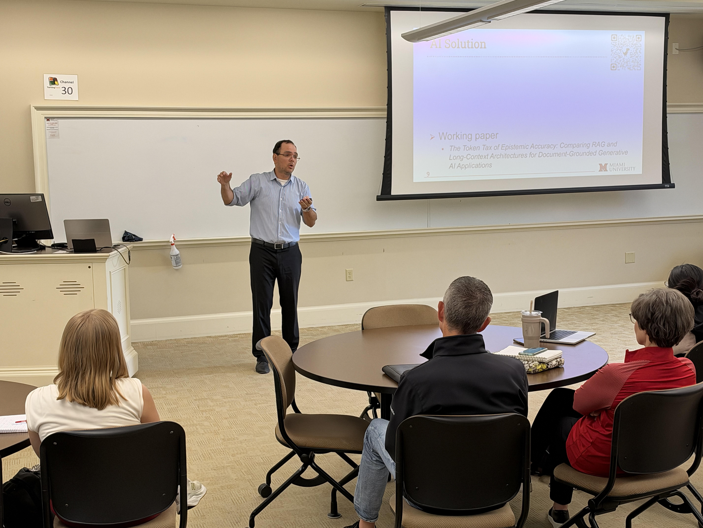

SIGHT: Safety Immersion and Gamified Hazard Training for Industry 5.0
Meeting 27: Q6 Deck Review, the Oct 14 AM Hub Visits, the Mill SOP for AR, and OSC 2027
October 16, 2026
Meeting Goals
Arthur: FSB presentation
Sixty minutes in six blocks; block widths are proportional to the minutes allotted in the agenda.
Recap: What We Covered in Meeting 26 (Oct 2)
Administrative / BWC
- Q5 report (DO 7.4) due Oct 9; Deliverable 2.1 revised so that Sep 4 is the reported September meeting and the November meeting is Nov 13.
- Farmer School dissemination session set for Oct 9 (Arthur).
- Industrious Group visit (Sep 25): Jeff Malek tried the AR headset. Lesson: first-time AR users need a short onboarding. Cleveland visit targeted for early November.
- ASSP Safety 2027 proposal submitted (Fadel and Lora); decision expected around November.
Technical
- SIGHT-VR v1.0: production-ready after closing all 85 issues.
- Makino: D200Z training produced overnight and UX3i in about two days, versus four to six months for each of the first three machines.
- First SOP-guided mill run (Sep 29): Jay, a novice machinist, ran the Bridgeport mill from Michael’s SOP and flagged items to tighten before AR.
MaxByte and closed session
- 9,000+ CNC lathe and cobot images annotated in RoboFlow; all three machines in AR targeted for Oct 23.
- IRB amendment for screen capture and recording (Lora and Jay); pre-pilots with team members.
Action Items from Meeting 26
| Responsible Party | Action Item | Due Date | Status |
|---|---|---|---|
| Fadel | Share the Q5 report draft (partial, then full) | Oct 5 / Oct 6 | ✓ Done: Q5 report (DO 7.4) submitted; pending BWC review |
| Arthur | Lead the Farmer School dissemination session | Oct 9 | ✓ Done: held Oct 9 (Technical Updates) |
| Fadel | Add the AM Hub team to the next biweekly update agenda | Next meeting | ✓ Done: agenda item 3 today |
| Austin / Michael | Develop onboarding for first-time AR headset users | Before the Cleveland visit | |
| Ibrahim | Provide the computer vision model to Austin | Carried over | |
| Austin | Verify the safety-zone circle stays centered after re-anchoring | Next update | |
| Austin / Arthur | Store AR evaluation data with the VR backend; one participant ID across VR and AR | Before pre-pilots | Related: headset-hosted evaluator web page added (weekly summary, Sep 28 to Oct 2) |
| Lora / Jay | Prepare an IRB amendment for screen capture and recording | ASAP | |
| MU, Lora, Discovery Center | Finalize the experimental protocol and schedule pre-pilots | ASAP |
MaxByte’s four items from Meeting 26 are on the MaxByte slide.
Meeting 26 Minutes
Administrative Updates
Mohammad Mayyas
Status of BWC Deliverables and Requirements
- Approved by BWC: every deliverable due through Sep 11, 2026, the latest being D2.8 (July/August meeting documents).
- Pending BWC review: the Q5 report (D7.4) and the September/October meeting documents (D2.9).
- Next: the Q6 deck (Oct 19), the quarterly grant meeting (Oct 23), and the Q5 expenditure report and invoice (Oct 30).
| Deliverable | Description | Due | Portal status |
|---|---|---|---|
| 2.8 | July/August project team meeting documents | Sep 11, 2026 | Approved |
| 7.4 | Quarterly progress report, Quarter 5 | Oct 9, 2026 | Pending review |
| 2.9 | September/October project team meeting documents | Nov 13, 2026 | Pending review |
| 3.4 | Q4 quarterly grant meeting: PI and PM attendance (MS Teams verification) | Oct 23, 2026 | Scheduled |
| 2.10 | November/December project team meeting documents | Jan 15, 2027 | Scheduled |
| 7.5 | Quarterly progress report, Quarter 6 | Jan 15, 2027 | Scheduled |


BWC Q6 Presentation: Slide Deck Review
Four slides on Quarter 5 (Jul 1 to Sep 30, 2026). Send any comments to Fadel by COB today (Fri, Oct 16); the deck is due to BWC by COB Monday, Oct 19.
Video frames restored from the PPTX for this preview; in the deck itself, the videos play in PowerPoint.
Save the Date: Our OSC 2027 Session Was Accepted
Student researchers: you are encouraged to attend if you can.
Once Fadel confirms the time with BWC, add it to your calendar: Google Calendar Outlook / Apple (.ics)
President Crawford and Senator Moreno Visit the AM Hub (Oct 14)




Photos: Jay Shan’s LinkedIn post.
Joining the AM Hub Subteam: Usman Asif
AM Hub subteam, Hamilton
A second AM Hub student researcher hire is in progress.
Source: Usman Asif’s resume (Oct 2026).
Makino: Meeting Status (Mohammad Mayyas)
Where we left off
- Two self-initiated VR trainings for AM Hub machines: the Makino D200Z (5-axis machining center) and UX3i (wire EDM), six guided modules each.
- Makino was contacted for feedback (Meeting 26).
- Q6 deck: “Next: a meeting with Makino’s Corporate Training Manager.”
- Michael covers the Makino visit in Technical Updates.
Technical Updates
The AM Hub subteam (Wissam, Leo, Michael, and Ibrahim) and Arthur Carvalho
AM Hub Subteam: Screen Share and Walkthrough
The AM Hub subteam will share their screen or talk through each update, in agenda order.
Bridgeport Mill SOP with AR Guidance (Michael Wise)
SIGHT at the Farmer School: Arthur’s Presentation (Oct 9)


Industry Partner Collaboration
MaxByte
MaxByte: Recent Developments in the AM Hub
Ram and the MaxByte team will share their slides on recent developments deployed in the AM Hub.
| Open items from Meeting 26 (Ramshankar / MaxByte) | Due | Status |
|---|---|---|
| Annotate the milling machine and deliver all three machines in AR (YOLO export, Unity), with Mohammad | Oct 23, 2026 | |
| Renew the Unity license | ASAP | |
| Share a table of SOP objects versus annotated objects, and explain how accuracy is calculated | Before the next presentation | |
| Review the email thread on the top-down camera annotations and respond | ASAP |
Risk Mitigation and Wrap-Up
All Project Members
Risk Mitigation and Log Updates
| Risk | Mitigation | Status |
|---|---|---|
| Only one AR headset (Magic Leap 2, now discontinued) | Backup headset bought with non-BWC funds; received and tested (Meeting 26). | Mitigated |
| Testing cannot start before the IRB covers recording, screen capture, and any monitor change | IRB amendment (Lora and Jay); Kristen offered help with IRB and human-subjects questions. | Open |
| Only Austin can set up and run the AR system | Austin is showing Michael how to set up and use the headset and edge-device program "so someone else can run the system" (AR weekly plan, week of Oct 5). | Proposed |
Upcoming BWC Deadlines
Oct 16
Q6 slide deck to BWC; OSC availability reply
Next up
BWC quarterly grant meeting: PI and PM (D3.4)
Scheduled
Q5 expenditure report and Q5 invoice
Due
November/December bi-monthly meeting
Scheduled
Then Jan 15, 2027: November/December meeting documents (D2.10) and the Q6 quarterly progress report (D7.5), via OIA as separate files.
Contacts: Fadel Megahed (fmegahed@miamioh.edu) · Mohamed Farrag, PM (farragm2@miamioh.edu).
Action Items and Next Steps
- COB today: any comments on the Q6 deck to Fadel.
- COB Monday, Oct 19: the Q6 deck goes to BWC, and Arthur’s and Jay’s OSC schedule checks are in.
- Oct 23: the BWC quarterly grant meeting.

Project funded by the Ohio BWC through their Worker Safety Innovation Center